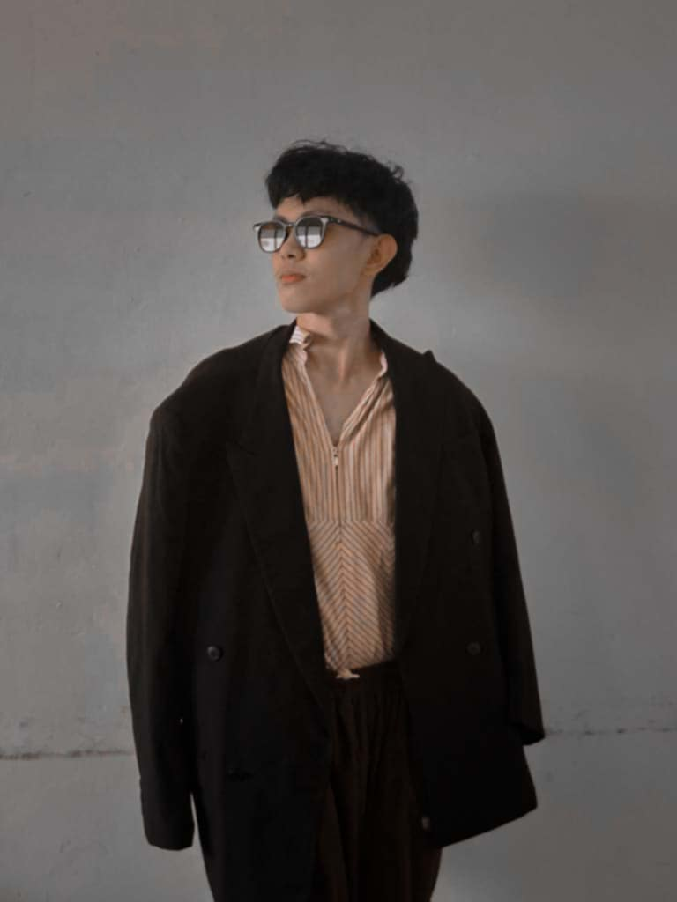

About Me

Hello! I'm Selwyn Castillo, a passionate programmer and technology enthusiast. I'm currently studying at Ceguera Technological Colleges pursuing my degree in Information Technology. My journey in programming began with a curiosity about how computers work, and it has evolved into a deep passion for creating innovative solutions.
I specialize in various programming languages and technologies, with a particular focus on Java and C++. When I'm not coding, I enjoy learning about new technologies and sharing my knowledge with others through this blog.
My Skills
- Java Programming
- C++ Development
- Web Development
- Networking
- Problem Solving
- Team Collaboration